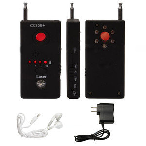

The Pedophile's Handbook
Handbook > Security > Environment
Choosing a safe location is the most important foundation for illegal child love practice, as there are actually lots of pedophiles out there who get caught in the middle of the act by people who accidentally show up without any warnings.
But it's not enough to just choose a safe location, you will also have to be continuously aware about what's going on around you at your actual locations, so nothing gets revealed in any way.
I will now create a location awareness policy that you should always follow when having sex with children, consisting of 3 important sections.
I therefore welcome you to a short but important chapter that we will now look into before moving even further down and into this frighting darkness of the handbook.
I know, this may seem like a little bit dry and boring subject, but it really is both important and commonly underestimated.
People and Routines
Every location has a set of people connected to it, which you may call residents of a particular location. And each resident has a certain presence and role at the location at certain times of the day, which should be rather predictable routines.
Make sure you know well:
- Who belongs to the location.
- When every resident is present (and not) during any day.
- Who are most likely to appear unexpectedly, and when.
- That all important doors are locked.
- You got enough time:
- To complete a session.
- To undo a session if someone suddenly arrives.
It's usually wise to perform illegal child love practice at less used and visited locations:
- Does a child institution have rarely used maintenance areas and storage rooms?
- Does your own home, or the home of a certain child, have a basement or attic? Or a private compartment in either?
- Does the playground or outdoors area have any nearby sheds, garages or condemned buildings to fool around within or behind?
- Are there any terrain levitations and drops in nearby woods to hide within?
What's important here is that you don't get surprised or seen by any resident of a location. Make sure you review and learn the traffic and routines of your selected location before you make any final decisions.
And whenever being unsure, your default policy should always be to abort your planned actions.
Increase your awareness and look around yourself, try seeing things that you haven't yet seen, and just think like a scientist. This won't only make you more secure, but interesting opportunities may suddenly arise unexpectedly.
Sounds
All locations have certain and distinctive sounds. If you learn these sounds to know, and become more aware of them, you will suddenly expand your senses in a way that will make your illegal child love practice way more secure and comfortable.
Make sure you learn the sounds of:
- People arriving at the location outdoors
- People closing by indoors
Sounds from cars arriving and stopping outside or nearby, gates that open, and main doors that unlock.
Sounds from squeaking doors, floors, floorboards, stairs, and so forth.
Learn to know all these sounds over time, and also do some testing yourself by moving around at the location.
A very nice tip is to setup innocent sound traps:
- Put a toy innocently in front of doors inside, so the door hits the toy if anyone moves quietly towards your location.
- Buy an expensive baby monitor, and you'll be able to monitor important zones with both audio and video.
- Buy a portable motion detector, and it will make a discreet warning sound in your room if anyone moves through any important zones outside it.
Visual
Even though you think you know your environment quite well, with no people nor any sounds around, you may still be watched or supervised.
Make sure you've guarded yourself from:
- Transparency
- Surveillance cameras
Never underestimate windows and curtains, even though you need to setup a ladder outside to watch inside. Several pedophiles have actually been caught by curious neighbors and mailmen, even repairmen. This danger also includes door cracks and keyholes.
Most people associate surveillance cameras with outdoors activities. But, they can also be found inside.
Babysitters and child institution workers should be especially careful about nanny cams, which are hidden cameras with the sole purpose of detecting child abuse.
Nanny Cams
Nanny cams are in reality hidden cameras that can be hidden inside almost any prop you can imagine that has a shiny black surface on it; the shiny black surface hiding the camera lens.
The latest and greatest nanny cams record in very high resolutions (HD), while some can even record in pitch darkness by using on-board infrared light.
Regular homes may have nanny cams that are hidden within small props like wall clocks, alarm clocks, smoke detectors, boom boxes, pencils, picture frames, pillows with buttons, and etc, which actually work fully as assumed, but are additionally surveillance cameras. They can also be hidden within children toys, like teddy bears and dolls (behind one of their black eyes), which are usually located inside the children's rooms; even within wall and nightstand lamps.
Larger institutions, like daycare facilities, can hide them behind anything really; even within kitchen stoves, large TVs, washing machines and mirrors. There are actually security companies out there that dismount large appliances and install spy cameras inside them, through modifications.
Even though these cameras are mostly used by babysitters and child institutions to detect child abuse, some paranoid guardians may use them on their own family members too; especially if they suspect any sexual abuse.
So, don't just be aware of these dangerous devices in general, but also be aware of any such device that should suddenly appear at your illegal child love locations.
Limitations and Tips
I have personally seen a few nanny cam recordings during my work with children and child abuse, and I've noticed a few flaws with such surveillance that are important to mention:
In the name of practicality and convenience, there are usually not that many nanny cams at each location. Just imagine having to go through several hours of video or stills multiplied by the amount of cameras having been set up. Even if the cameras are controlled with motion detectors, it will still require a lot of work and time going through all the recorded content in search for any child abuse.
Thus, these cameras are usually just a few, placed at the most critical spots, like bath and changing rooms, bedrooms, living rooms, kitchens, and so on.
Child love practice during babysitting and child institution work should only happen in rooms that are rarely used, like attics, basements and storage rooms. And ideally where there are few props around, like no wall clocks, teddy bears, electric equipment, and so on. Even an obvious blind spot in a room is enough, by exploiting the room's architecture.
Generally, the operators of nanny cams usually test babysitters and child care workers out over a certain period of time, like 1-3 months or so. And if the carer is an exceptional carer apparently, they tend to go tired and sloppy regarding the monitoring, which eventually stops completely. However, this is just an estimate based on my own experience.
All pedophiles should investigate spy equipment shops all over the world and learn how these props look like, especially those being sold in your local country. Search for 'spy cameras' and 'nanny cameras' on Internet electronics stores.
Fortunately, it does exist special equipment that can detect hidden cameras and microphones. Some of these can become expensive, but not as expensive as serving hard time. These will easily detect and find all nanny cams.

Please note that spy equipment is usually very hard to detect if you're not technologically savvy, so be sure to read the manual of any spy equipment detectors thoroughly. Optionally, buy yourself nanny cams to test the detector on.
![[image004.jpg]](images/image004.jpg)